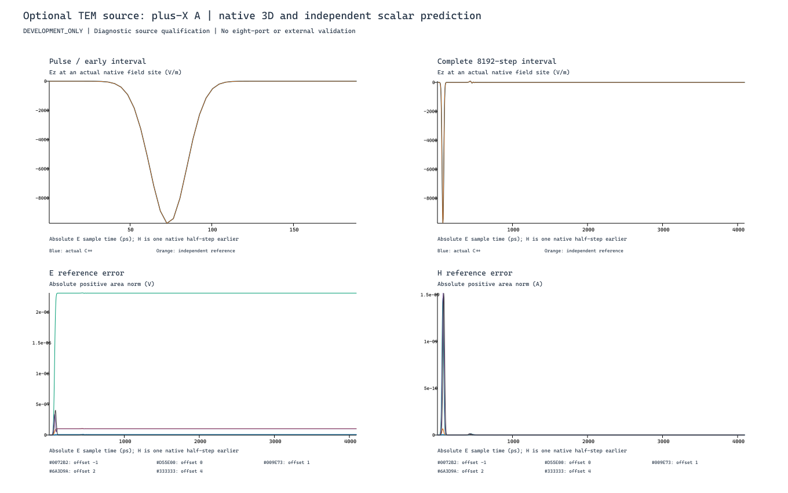
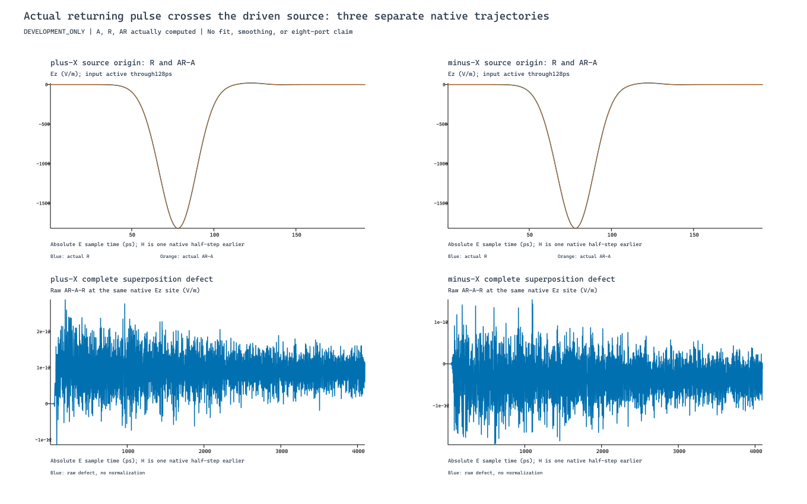

Reference comparisons
We compare calculated responses with a separately implemented numerical reference. Both use defined inputs; a numerical comparison is not a measurement.
 DigitalArtDeco Labs
DigitalArtDeco Labs
Solver development
DigitalArtDeco Labs develops its own implementations of numerical methods for electromagnetic simulation. Our FDTD work uses the finite difference time domain method.
Reference comparisons and controlled cases help us examine how a source launches a pulse, how waves return and where numerical differences remain.
We compare calculated responses with a separately implemented numerical reference. Both use defined inputs; a numerical comparison is not a measurement.
We isolate source behaviour in a uniform transmission line. Separate excitations and their combined response let us check a specific question.
We retain the inputs, saved results and evaluation records together. Original plots preserve the differences and the limits of each comparison.
Selected development checks
These figures come from the same uniform TEM pulse-source study. They examine different aspects of that source, not two independent studies.
Does the calculated pulse follow the reference response?

The electric pulse from the 3D calculation is overlaid with a separately implemented scalar reference. The lower panels retain the electric and magnetic reference errors.
This checks the selected source, uniform lossless line, grid and observation window. Small remaining differences are visible, not removed.
View full image and context: Comparing a pulse with a numerical referenceCan a returning pulse cross the source region while it is active?

Separate incident, returning and combined calculations are compared in both directions. The lower panels show the remaining superposition difference throughout the saved interval.
The combined response is actually calculated, not assembled from the separate curves. This checks the defined source conditions, not an arbitrary PCB layout.
View full image and context: Checking returning wavesThese examples document selected internal numerical checks under defined test conditions. They do not represent external certification or a general accuracy guarantee.
This work supports the company's simulation software, including DAD FieldWorks. A passed source check does not qualify every structure or release the application for production use.
Discover DAD FieldWorks · Discuss a numerical test case · Image provenance